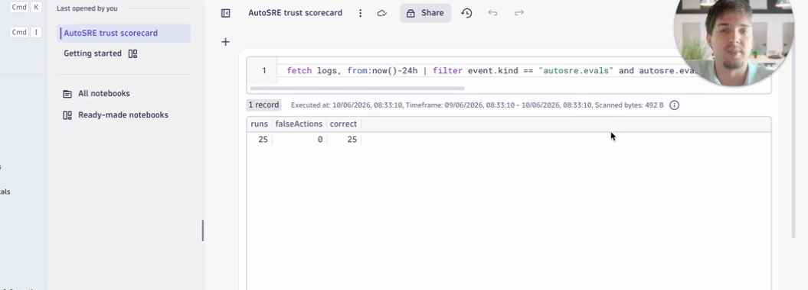

autosre
Grail · Dynatrace Notebook
The agent's track record lives in the same tenant it monitors.
dkr99558.apps.dynatrace.com · notebook: AutoSRE trust scorecard

25graded runs
0false actions
25correct
1 DQLaway in Grail
Graded eval results are exported as log records into the Dynatrace tenant and summarized with
fetch logs | filter event.kind == "autosre.evals" | summarize runs, falseActions, correct, right next to the audit trail of every live approve and reject.